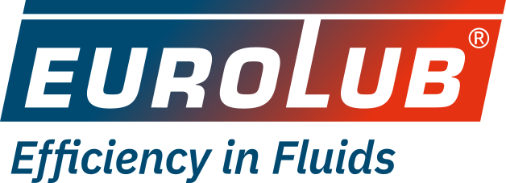

Our brands
Eighteen brands. One distributor.
Lubricants, coolants, additives, car care, tyre repair and engine parts from Brazil, China, Germany, Japan, USA, United Arab Emirates and United Kingdom, supplied to the trade across Lebanon and Syria.
Exclusive agencies
MAFCO is the exclusive agent and distributor for these brands in Lebanon and Syria.
 PrestoneAntifreeze and coolant from the brand that introduced it to American drivers.
PrestoneAntifreeze and coolant from the brand that introduced it to American drivers.
 BIZOLGerman motor oils, transmission fluids and professional-grade additives.
BIZOLGerman motor oils, transmission fluids and professional-grade additives.
 RedexPetrol and diesel fuel-system additives, trusted by British drivers since 1922.
RedexPetrol and diesel fuel-system additives, trusted by British drivers since 1922.
 HoltsCar maintenance and emergency repair products. Problem solved.
HoltsCar maintenance and emergency repair products. Problem solved.
 SimonizCar cleaning and care with more than a century of shine behind it.
SimonizCar cleaning and care with more than a century of shine behind it.
 Adam's PolishesPremium American detailing: washes, polishes, ceramic and graphene coatings.
Adam's PolishesPremium American detailing: washes, polishes, ceramic and graphene coatings.
 NILOSGerman-made adhesives, vulcanising materials and patches for conveyor belt repair.
NILOSGerman-made adhesives, vulcanising materials and patches for conveyor belt repair.
 Dura-VulcA complete tyre repair line: patches, strings, cements and tools.
Dura-VulcA complete tyre repair line: patches, strings, cements and tools.
 KACOGerman sealing systems: oil seals, shaft seals and gaskets.
KACOGerman sealing systems: oil seals, shaft seals and gaskets.
 MTE-THOMSONThermostats and engine-management sensors. Temperature and emissions under control.
MTE-THOMSONThermostats and engine-management sensors. Temperature and emissions under control.
Also in our range
Brands we stock and supply alongside our exclusive agencies.
 TOTACHIMotor oils, fluids and engine consumables from Japan.
TOTACHIMotor oils, fluids and engine consumables from Japan.
 VeedolThe professional's choice in motor oil for over a century.
VeedolThe professional's choice in motor oil for over a century.
 DuckhamsThe original British motor oil, since 1899.
DuckhamsThe original British motor oil, since 1899.
 LUBEGARDTransmission additives and fluids relied on by professional workshops.
LUBEGARDTransmission additives and fluids relied on by professional workshops.
 EmaratEngine oils, industrial lubricants and greases made in the UAE.
EmaratEngine oils, industrial lubricants and greases made in the UAE.
 REMA TIP TOPTyre repair systems from the German specialist: patches, materials, tools and equipment.
REMA TIP TOPTyre repair systems from the German specialist: patches, materials, tools and equipment.

EUROLUBGerman lubricants, additives and winter chemicals, from Bavaria to the world. BaseusCar chargers, car vacuum cleaners and everyday charging accessories.
BaseusCar chargers, car vacuum cleaners and everyday charging accessories.
Trade customer?
Ask us for availability, pricing and the full range of any brand.